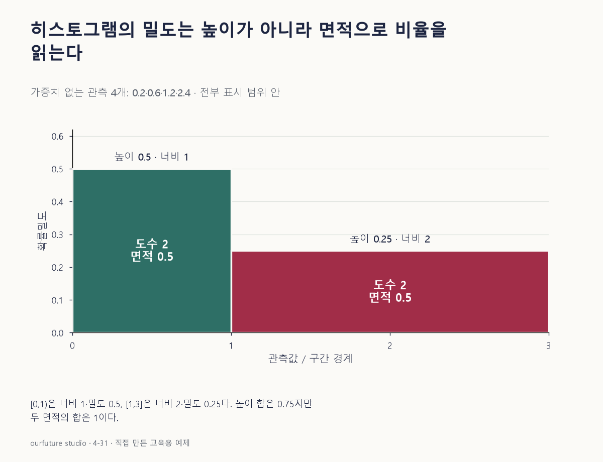

조건을 바꾸며 확인하기
가중치 없고 모든4관측이0~3 표시 범위 안에 있다. 범위 밖 제외·재정규화 설정으로 일반화하지 않는다.
설명 그림과 비교하기
아래 그림과 표는 고정된 설명 예제입니다. 기본·변형 중 어떤 조건인지 캡션을 읽고, 바꾼 입력의 결과는 계산 칸에서 확인하세요.

같은 문제를 직접 골라 보기
관측값 0.2·0.6·1.2·2.4를 구간 [0,1), [1,3]으로 나눈다. 가중치 없이 전체 4개를 density로 정규화한다.
조건을 더 바꾸면?
같은 자료를 경계 0·1·2·3의 같은 너비 1인 세 구간으로 나눈다. 도수와 밀도 높이는?
변형 풀이 확인
도수는 2·1·1, 밀도는 0.5·0.25·0.25다.
구간 너비가 모두 1이면 높이 합과 면적 합이 우연히 같아 1이 된다. 이 성질을 너비가 다른 모든 히스토그램에 일반화하지 않는다.
밀도 그림은, 높이 곱하기 너비.